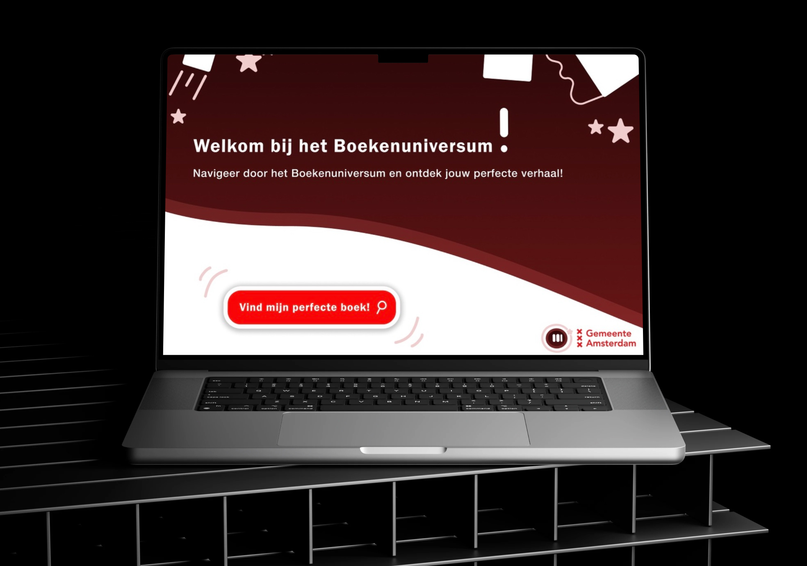
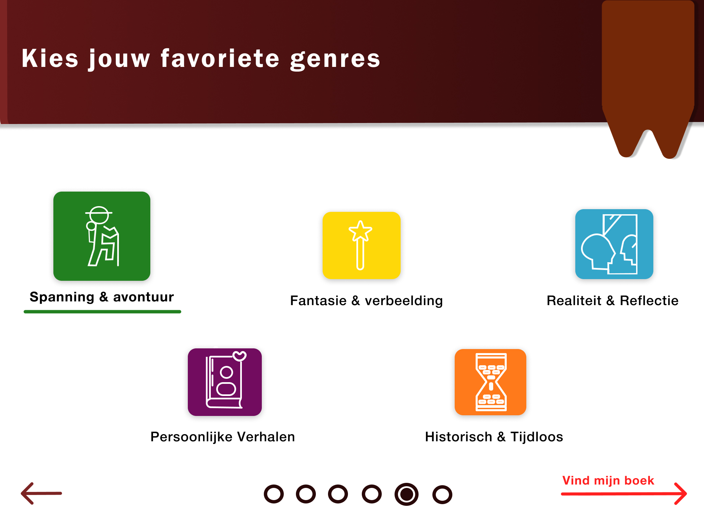
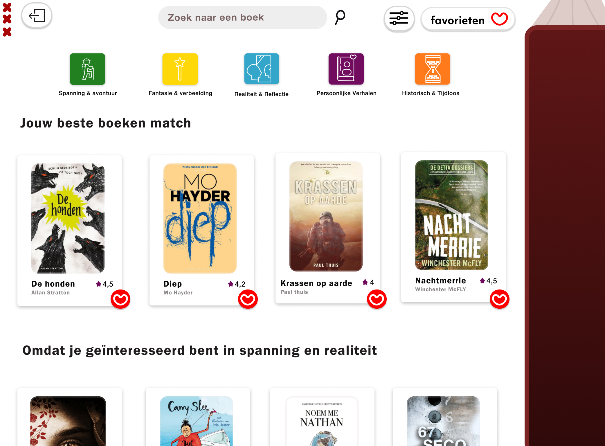
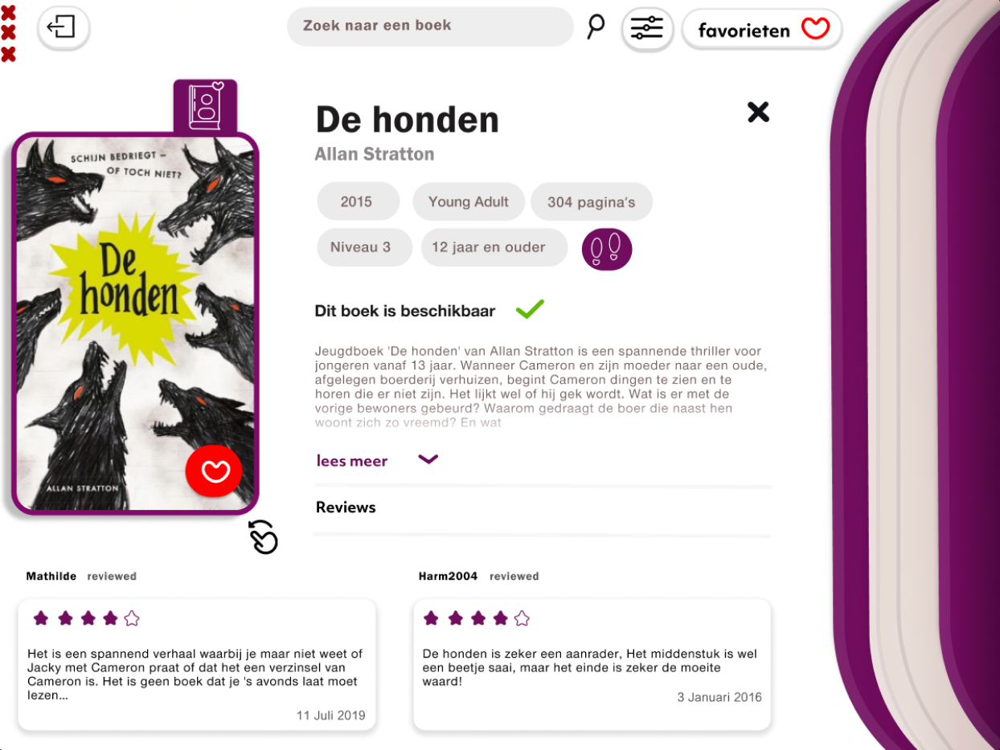
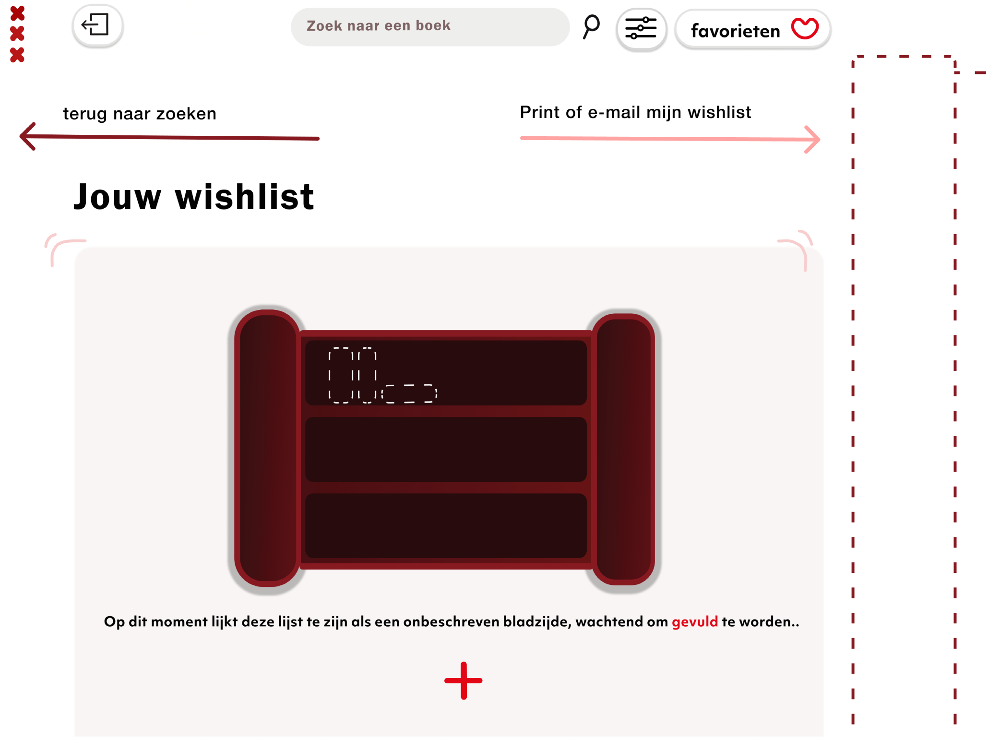
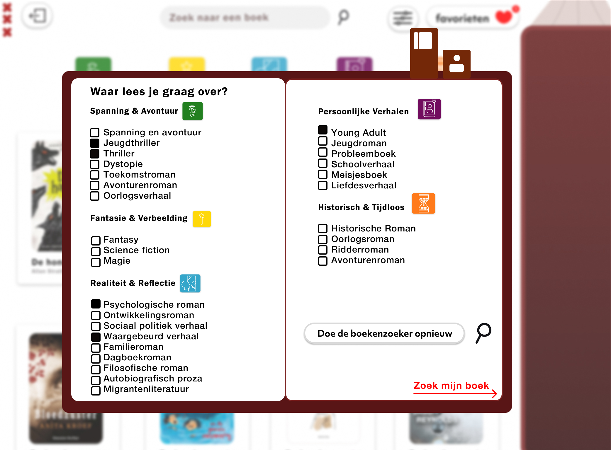

Teen Book App
The goal of the "Boekenzoeker" project is to design an interface for an iPad that allows lower secondary school students to easily browse books that are appealing to them. This interface will be used in the school library, where students can add books to a 'wishlist' and email the list to themselves, making it easier to find and take the books off the shelf.
About the Assignment
This project was focused on building an e-commerce website that enables customers to buy products, track their shopping cart, and make secure payments. The project uses HTML, CSS for the frontend, JavaScript for interactivity, and PHP for server-side processing and database interactions.
Problem Statement
Many high school students rarely visit the public library, making the school library often their only source for books. The Municipality of Amsterdam wants to encourage reading pleasure and reading skills among students with an easy-to-use iPad app in the school library. This app should be simple to operate and resonate with 12- to 15-year-olds.
My Role
- UI Design
- Concept Development
- Interface Design
- Functional Design
- Brand Identity
- Sub-style
- Target Audience Focus
- User Experience
Branding
The app is called "The Book Universe" to show young people how vast and engaging the world of books is. This is reflected in the logo with a small star, symbolizing the variety of books. The municipality's logo is placed alongside to show their involvement. I used the municipality's brand colors and added a minimalist book icon, fitting the chosen style.
Demo
Check out parts of the process:
View on FigmaProject Images




